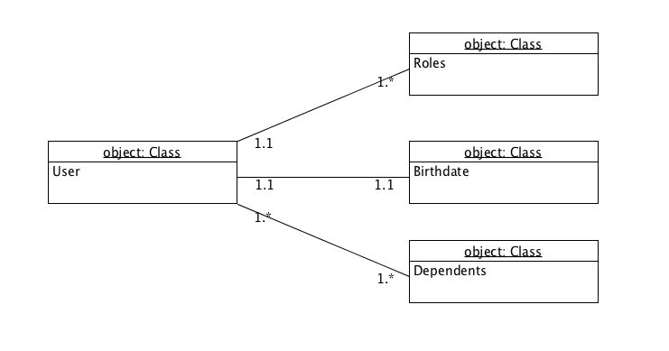
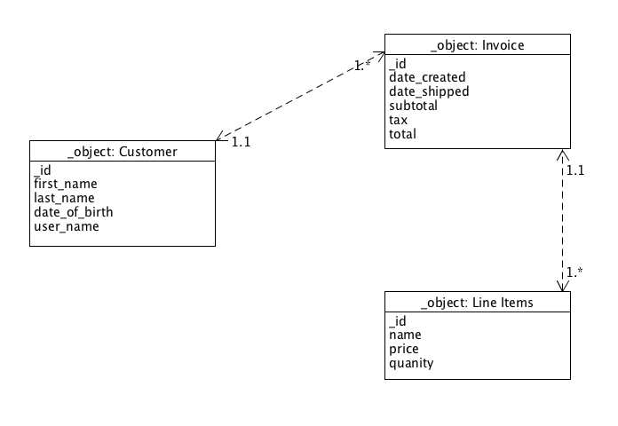
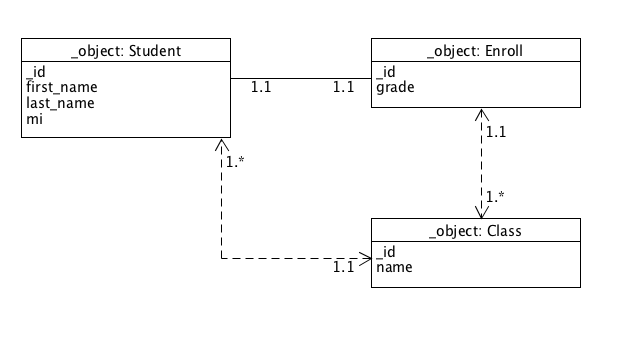
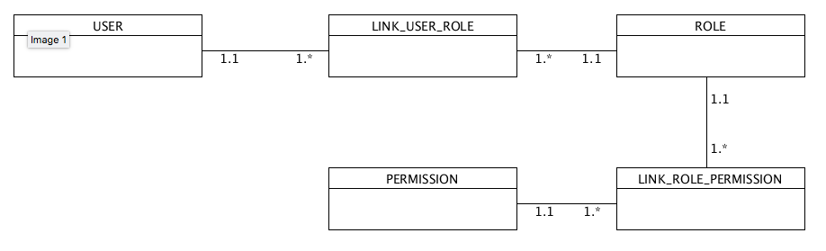
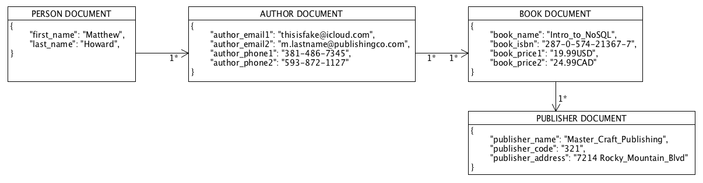

NoSQL Diagrams
Data diagrams and NoSQL document structures from the Introduction to NoSQL course. Select any diagram to open it full size.
// DIAGRAMS


Exercise 1.4: Data diagram

Exercise 2.2: Data diagram

Exercise 2.3: Data diagram

Exercise 3.2: Data diagram

Exercise 3.3: Document diagram